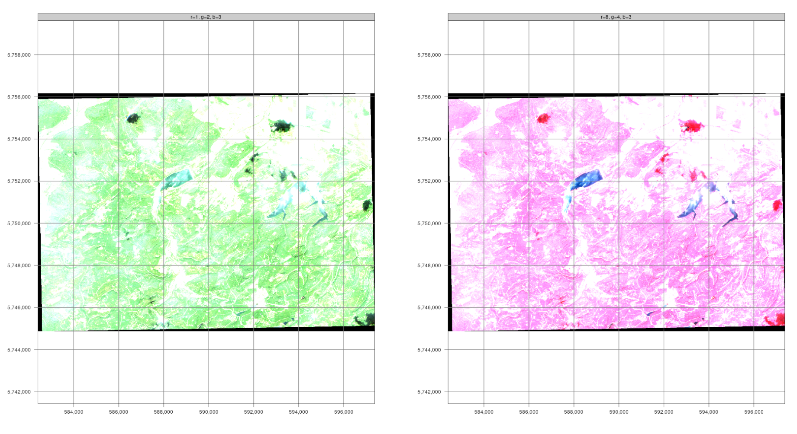

# ---- 0 Projekt Setup ----
require("pacman")
# packages installing if necessary and loading
pacman::p_load(mapview, mapedit, tmap, tmaptools, raster, terra, stars, gdalcubes, sf, dplyr,CDSE, downloader, tidyverse,RStoolbox,rprojroot, exactextractr, randomForest, ranger, e1071, caret, link2GI, rstac, OpenStreetMap,colorspace)
#--- Switch to determine whether digitization is required. If set to FALSE, the
root_folder = find_rstudio_root_file()
ndvi.col = function(n) {
rev(sequential_hcl(n, "Green-Yellow"))
}
ano.col = diverging_hcl(7, palette = "Red-Green", register = "rg")
nclasses=2In the geosciences, remote sensing is the only measurement technique that allows complete coverage of large spatial areas, up to the entire Earth’s surface. Its successful application requires both the use of existing methods and the adaptation and development of new ones.
Introduction
In geospatial or environmental informatics, the detection of changes to the Earth’s surface using satellite, aircraft or drone images, known as change detection analysis, is an important application. These results are often linked to biophysical, geophysical or anthropogenic processes in order to gain both a deeper understanding and the possibility of developing predictive models. Methods of image analysis are of outstanding importance for generating spatial information from the underlying processes. Since both the quantity and quality of this “image data” are playing an increasingly important role in environmental monitoring and modeling, it is becoming more and more necessary to integrate “big data” concepts into the analyses. This means performing reproducible analyses with large amounts of data (>> 10 GB). This is essential for both scientific knowledge gain and future societal challenges.
As already explained in the introduction, we start with a scalable change detection analysis of forest damage in low mountain ranges, which is a typical application-oriented task. Scalable means that we limit the analysis to a manageable area, the Nordwestharz, and to two time slices. However, the resulting algorithm can be applied to different or larger areas and to more time slices.
Information from image data
Unprocessed satellite images are not necessarily informative. While our eyes can interpret a true-color image relatively conclusively and intuitively, a reliable and reproducible, i.e. scientifically sound, interpretation requires other approaches. A major advantage of typical image analysis methods over visual interpretation is the derivation of additional, so-called invisible information. We have already calculated simple indices such as NDVI or surface albedo as a physically based conversion of image signals into a measured variable.
To obtain useful or meaningful information, e.g. about the land cover in an area, we have to analyze the data according to the question at hand. Probably the best known and most widely used approach is the supervised classification of image data into categories of interest.
This tutorial introduces you to the classification of satellite and aerial image data.
We will cover the following topics:
- preparation of the working environment and loading of data
- digitization of the training areas
- unsupervised classification (kmeans clustering)
- model training
- supervised classification (Random Forest, Maximum Likelihood)
- estimation of model quality
Classification of remote sensing data
Please note that all types of classification usually require extensive data pre-processing. The focus is then on model building and quality assessment, which can be seen as the technical basis for classification, in order to finally derive the interpretation of the results in terms of content in the data post-processing. We will go through this process step by step.
Supervised classification
In supervised land cover classification, a model is derived from a limited amount of training land cover data that predicts land cover for the entire data set. The land cover types are defined a priori, and the model attempts to predict these types based on the similarity between the characteristics of the training data and the rest of the data set.

From a pragmatic point of view, classification tasks generally require the following steps:
- Creation of a comprehensive input data set that contains one or more raster layers. Selection of training areas, i.e. subsets of the input data set for which the land cover type is known to the remote sensing expert. Knowledge of the land cover can be obtained, for example, from one’s own or third-party in situ observations, management information or other remote sensing products (e.g. high-resolution aerial photographs). Training a model using the training sites. For validation purposes, the training sites are often subdivided into one or more test and training sites to evaluate the performance of the model algorithm. Applying the trained model to the entire data set, i.e. predicting the land cover type based on the similarity of the data at each site to the class characteristics of the training data set.
Change Detection Forest Change Northwest Harz
In this tutorial, we will use the Sentinel-2 images from the previous exercise.
Start - Setting up the work environment
You can either use the data saved from the previous exercise or define, download and edit a new area. However, the work environment is usually loaded first.
Please add any missing or defective packages in the above setup script (if error messages occur). On the basis of the available Sentinel data, the first step should be to identify suitable data sets for a surface classification.
Step 1: Get an overview
A closer look at the RGB images (RGB432B) shows that four data sets appear to be suitable due to the image quality and low cloud cover. These are June 19 and July 24, 2019, and June 33 and July 30, 2020. The May images were chosen because of the earlier growing season, as any growth on the cleared areas might be less visible here.
First of all, this data must be available in a “raster stack”, i.e. a multi-channel image.
Download
####
utils::download.file(url="https://github.com/gisma/gismaData/raw/master/MOF/MOF_CORE.gpkg",destfile="../data/MOF_CORE.gpkg")
forest_mask = st_read("../data/MOF_CORE.gpkg")
sf::st_crs(forest_mask) <- 4326
fm=bb(forest_mask,projection=4326)
# forest_4326 =st_transform(forest_mask,crs = 4326)
# forest_3035 =st_transform(forest_mask,crs = 3035)
# forest_32632 =st_transform(forest_mask,crs = 32632)
# mapping the extents and boundaries of the choosen geometries
tmap_mode("view")
tmap_options(check.and.fix = TRUE) +
tm_basemap(server = c("Esri.WorldImagery", "Esri.WorldTopoMap")) +
tm_shape(forest_mask) +
tm_polygons(alpha = 0.4, col="mainTreeSp")
id <- Sys.getenv("CDSE_ID")
secret <- Sys.getenv("CDSE_SECRET")
OAuthClient <- GetOAuthClient(id = id, secret = secret)
collections <- GetCollections(as_data_frame = TRUE)
collections
images <- SearchCatalog(bbox =cm, from = "2018-05-01", to = "2021-05-31",
collection = "sentinel-2-l2a", with_geometry = TRUE, client = OAuthClient)
images
summary(images$areaCoverage)
day <- images[order(images$tileCloudCover), ]$acquisitionDate[1:20]
script_file_rb <- system.file("scripts", "RawBands.js", package = "CDSE")
script_file_ndvi <- system.file("scripts", "NDVI_float32.js", package = "CDSE")
script_file_tc <- system.file("scripts", "TrueColor.js", package = "CDSE")
r_rb <- GetImage(bbox = ext, time_range = day[5], script = script_file_rb,
collection = "sentinel-2-l2a", format = "image/tiff", mosaicking_order = "leastCC",
resolution = 10, mask = TRUE, buffer = 100, client = OAuthClient)
names(r_rb) = c("B01", "B02", "B03", "B04", "B05", "B06", "B07", "B08", "B8A", "B09", "B11", "B12")
terra::plot(r_rb, main = paste(names(r_rb), day), cex.main = 0.75)
r_ndvi <- GetImage(bbox = fm, time_range = day[5], script = script_file_ndvi,
collection = "sentinel-2-l2a", format = "image/tiff", mosaicking_order = "leastCC",
resolution = 10, mask = TRUE, buffer = 100, client = OAuthClient)
names(r_ndvi) = c("NDVI")
terra::plot(r_ndvi, main = paste(names(r_ndvi), day), cex.main = 0.75)
r_tc <- GetImage(bbox = fm, time_range = day[5], script = script_file_tc,
collection = "sentinel-2-l2a", format = "image/tiff", mosaicking_order = "leastCC",
resolution = 10, mask = TRUE, buffer = 100, client = OAuthClient)
names(r_tc) = c( "B02", "B03", "B04")
terra::plotRGB(r_tc, main = paste("true color B02, B03, B04"), cex.main = 0.75)
images <- SearchCatalog(bbox = fm, from = "2018-01-01", to = "2023-12-31",
collection = "sentinel-2-l2a", with_geometry = TRUE,
filter = "eo:cloud_cover < 5", client = OAuthClient)
images <- SearchCatalog(aoi = forest_mask, from = "2018-01-01", to = "2023-12-31",
collection = "sentinel-2-l2a", with_geometry = TRUE,
filter = "eo:cloud_cover < 10", client = OAuthClient)
# Get the day with the minimal cloud cover for every month -----------------------------
tmp1 <- images[, c("tileCloudCover", "acquisitionDate")]
tmp1$month <- lubridate::month(images$acquisitionDate)
agg1 <- stats::aggregate(tileCloudCover ~ month, data = tmp1, FUN = min)
tmp2 <- merge.data.frame(agg1, tmp1, by = c("month", "tileCloudCover"), sort = FALSE)
# in case of ties, get an arbitrary date (here the smallest acquisitionDate,
# could also be the biggest)
agg2 <- stats::aggregate(acquisitionDate ~ month, data = tmp2, FUN = min)
monthly <- merge.data.frame(agg2, tmp2, by = c("acquisitionDate", "month"), sort = FALSE)
days <- monthly$acquisitionDate
# Retrieve images in parallel ----------------------------------------------------------
script_file <- system.file("scripts", "NDVI_float32.js", package = "CDSE")
tmp_folder <- tempfile("dir")
lstRast <- lapply(days, GetImageByTimerange, bbox = fm, collection = "sentinel-2-l2a",
script = script_file, file = NULL, format = "image/tiff", mosaicking_order = "mostRecent",
resolution = 10, buffer = 0, mask = TRUE, client = OAuthClient,
url = getOption("CDSE.process_url"))
# Plot the images ----------------------------------------------------------------------
par(mfrow = c(3, 4))
sapply(seq_along(days), FUN = function(i) {
ras <- lstRast[[i]]
day <- days[i]
#ras[ras < 0] <- 0
terra::plot(ras, main = paste("MOF NDVI on", day), range = c(0, 1),
cex.main = 0.7, pax = list(cex.axis = 0.5), plg = list(cex = 0.5),
col = colorRampPalette(c("darkred", "yellow", "darkgreen"))(99))
})Preparation of the data
As soon as the download has been successful, the actual classification can begin. First, the data must be organized in a technically suitable way as a multichannel image. In addition, a current or temporally corresponding Corine land use data set is loaded to generate a binary forest/non-forest mask. The already available Copernicus account can be used to download the Corine data (https://land.copernicus.eu/pan-european/corine-land-cover). After the (manual) download, unzip the data into the subdirectory ‘level0’ (be careful, there are countless subdirectories here after unzipping the archive). We need the file U2018_CLC2018_V2020_20u1.tif. Alternatively, the already correctly processed and projected *data set from the github repository (see script) can be used.
#--- Reading the data from the directories
##--- This describes how to process the Corine land use and land cover dataset
## The necessary file can also be downloaded from the repository
## An account is required for the download https://land.copernicus.eu/pan-european/corine-land-cover
## Therefore, download the data manually and copy it into the directory and unzip it
## Then execute the commented snippet below
# corine_eu = raster(file.path(envrmt$path_data_lev0,"u2018_clc2018_v2020_20u1_raster100m/DATA/U2018_CLC2018_V2020_20u1.tif"))
# tmp = projectRaster(pred_stack_2019[[1]],crs = crs(corine_eu))
# corine_crop = raster::crop(corine_eu,tmp)
# corine_utm = projectRaster(corine_crop,crs = crs(pred_stack_2019))
# corine = resample(corine_utm,pred_stack_2019[[1]])
# raster::writeRaster(corine,file.path(envrmt$path_data_lev0,"/corine.tif"),overwrite=TRUE)
# Alternatively, download the example data set
utils::download.file(url="https://github.com/gisma/gismaData/raw/master/geoinfo/corine.tif",destfile=file.path(root_folder,"data/corine.tif"))
corine = rast(file.path(root_folder,"data/corine.tif"))
plot(corine)
# Create a forest mask
# Agro-forestry areas code=22, Broad-leaved forest code=23,
# Coniferous forest code=24, Mixed forest code=25
mask = classify(corine,c(-100,22,0,22,26,1,26,500,0))
plot(mask)
# RGB stack of the two years
utils::download.file(url="https://github.com/gisma/gismaData/raw/master/geoinfo/corine.tif",destfile=file.path(root_folder,"data/corine.tif"))
utils::download.file(url="https://github.com/gisma/gismaData/raw/master/geoinfo/corine.tif",destfile=file.path(root_folder,"data/corine.tif"))
pred_stack_2019 = raster::stack(list.files(file.path(envrmt$path_data_lev1,"BOA"),pattern = "20190619",full.names = TRUE))
pred_stack_2020 = raster::stack(list.files(file.path(envrmt$path_data_lev1,"BOA"),pattern = "20200623",full.names = TRUE))
# Stack loop over the data
for (pat in c("EVI", "MSAVI2", "NDVI", "SAVI")){
pred_stack_2019 = raster::stack(pred_stack_2019, stack(list.files(file.path(envrmt$path_data_lev1, pat), pattern = "20190619", full.names = TRUE)))
pred_stack_2020 = raster::stack(pred_stack_2020,stack(list.files(file.path(envrmt$path_data_lev1,pat),pattern = "20200623",full.names = TRUE)))
}
# get rid of NA
pred_stack_2019 = reclassify(pred_stack_2019, cbind(NA, 0))
pred_stack_2020 = reclassify(pred_stack_2020, cbind(NA, 0))
# Assign human-readable names to the data layers
names(pred_stack_2019) = c("band1", "band2", "band3", "band4", "band5", "band6", "band7", "band8", "band9", "band10", "band11", "EVI", "MSAVI2", "NDVI", "SAVI")
names(pred_stack_2020) = c("band1", "band2", "band3", "band4", "band5", "band6", "band7", "band8", "band9", "band10", "band11", "EVI", "MSAVI2", "NDVI", "SAVI")
saveRDS(pred_stack_2019,paste0(envrmt$path_data,"pred_stack_2019.rds"))
saveRDS(pred_stack_2020,paste0(envrmt$path_data,"pred_stack_2020.rds"))
pred_stack_2019 = readRDS(paste0(envrmt$path_data,"pred_stack_2019.rds"))
pred_stack_2020 = readRDS(paste0(envrmt$path_data,"pred_stack_2020.rds"))
# visual inspection of the stacks
plot(pred_stack_2019)
plot(pred_stack_2020)First impression – K-means cluster classification
Probably the best-known unsupervised classification technique is K-means clustering, which is also referred to as the “simplest machine learning algorithm”. It is often used to obtain an initial overview of whether the raster data can be sufficiently separated in feature space.
In our example (applied to 5 classes and executed with the function unsuperClass from the RStoolbox package), this looks as follows. The cluster algorithm can achieve a fairly acceptable separation of the clearings/bald spots with 5 clusters, which makes a classification seem promising. Also experiment with other cluster settings and discuss the results.
## k-means über RStoolbox
# Modell
prediction_kmeans_2019 = RStoolbox::unsuperClass(pred_stack_2019, nClasses = 5,norm = TRUE, algorithm = "MacQueen")
# Klassifikation
plot(prediction_kmeans_2019$map)
prediction_kmeans_2020 = RStoolbox::unsuperClass(pred_stack_2020, nClasses = 5,norm = TRUE, algorithm = "MacQueen")
plot(prediction_kmeans_2020$map)

Step 2 - Generating training data
For a supervised classification, we need data that indicates which surface class defined areas of the satellite image belong to. This data is referred to as training data and is very often obtained by manual digitization. This can be done quite comfortably in RStudio if only a few training areas have to be digitized quickly and effectively.
For larger tasks, it makes sense to use the convenient method described in the QGIS 3.16 documentation, for example in the digitizing tutorial.
Digitizing training data
We assume that we want to classify two types of land cover: clearcut and other. With mapedit, each class must be digitized individually. Once the training areas are available as vector data, the features of the respective raster stack can be extracted into a table according to the digitized classes and corrected for possible missing values.
If this part has already been completed, the logical variable digitize (defined at the beginning of the script) can be set to FALSE and the else part of the branch can be run – in other words, only the existing data is read.
Excursus: Creating training areas with mapedit
Using color composites for better training results
For this exercise, we use mapedit, a small but powerful package that allows you to digitize and edit vector data in Rstudio or an external browser. In combination with mapview, any [color composite] (https://custom-scripts.sentinel-hub.com/custom-scripts/sentinel-2/composites/) can also be used as a basis for digitization.
m1 = tm_shape(pred_stack_2019) + tm_rgb(r=4, g=3, b=2) +
tm_layout(legend.outside.position = "right",
legend.outside = T,
panel.label.height=0.6,
panel.label.size=0.6,
panel.labels = c("r=1, g=2, b=3")) +
tm_grid()
m2 = tm_shape(pred_stack_2019) + tm_rgb(r=8, g=4, b=3) +
tm_layout(legend.outside.position = "right",
legend.outside = T,
panel.label.height=0.6,
panel.label.size=0.6,
panel.labels = c("r=8, g=4, b=3")) +
tm_grid()
tmap::tmap_arrange(m1,m2)
The planes can be switched using the plane control. In true-color composites, the visible spectral channels Red (B04), Green (B03), and Blue (B02) are mapped to the corresponding red, green, and blue color channels, respectively, producing an image of the surface that closely resembles the natural “color” as it would be seen by a human sitting on the spacecraft. False color images are often created using the spectral channels for near-infrared, red, and green. They are particularly useful for assessing vegetation because plants reflect near-infrared and green light while absorbing red light (red-edge effect). Dense vegetation appears a darker red. Cities and open ground appear gray or light brown, water appears blue or black.
#---- Digitization of training data ----
if (digitize) {
# For the supervised classification, we need training areas. You can digitize them as shown below or alternatively use QGis, for example
# clearcut
# For the false color composite r = 8, g = 4, b = 3, maxpixels = 1693870)
# maxpixels has significantly higher memory requirements, vegetation in red
# below the true color composite
train_area_2019 <- mapview::viewRGB(pred_stack_2019, r = 4, g = 3, b = 2, maxpixels = 1693870) %>% mapedit::editMap()
# Adding the attributes class (text) and id/year (integer)
clearcut_2019 <- train_area_2019$finished$geometry %>% st_sf() %>% mutate(class = "clearcut", id = 1,year=2019)
train_area_2020 <- mapview::viewRGB(pred_stack_2020, r = 4, g = 3, b = 2,maxpixels = 1693870) %>% mapedit::editMap()
clearcut_2020 <- train_area_2020$finished$geometry %>% st_sf() %>% mutate(class = "clearcut", id = 1,year=2020)
# other: all areas not belonging to clear cutting as representative as possible
train_area_2019 <- mapview::viewRGB(pred_stack_2019, r = 4, g = 3, b = 2) %>% mapedit::editMap()
other_2019 <- train_area_2019$finished$geometry %>% st_sf() %>% mutate(class = "other", id = 2,year=2019)
train_area_2020 <- mapview::viewRGB(pred_stack_2020, r = 4, g = 3, b = 2) %>% mapedit::editMap()
other_2020 <- train_area_2020$finished$geometry %>% st_sf() %>% mutate(class = "other", id = 2,year=2020)
train_areas_2019_2020 <- rbind(clearcut_2019,clearcut_2020, other_2019,other_2020) # Reproject to the raster file
train_areas_2019 = sf::st_transform(train_areas_2019_2020,crs = sf::st_crs(pred_stack_2019))
mapview(filter(train_areas_2019_2020,year==2019), zcol="class")
# save geometries
st_write(train_areas_2019_2020,paste0(envrmt$path_data,"train_areas_2019_2020.gpkg"))
# Extract the training data for the digitized areas
tDF_2019 = exactextractr::exact_extract(pred_stack_2019, filter(train_areas_2019_2020,year==2019), force_df = TRUE,
include_cell = TRUE,include_xy = TRUE,full_colnames = TRUE,include_cols = "class")
tDF_2020 = exactextractr::exact_extract(pred_stack_2020, filter(train_areas_2019_2020,year==2020), force_df = TRUE,
include_cell = TRUE,include_xy = TRUE,full_colnames = TRUE,include_cols = "class")
# again, copy together into a file
tDF_2019 = dplyr::bind_rows(tDF_2019)
tDF_2019$year = 2019
tDF_2020 = dplyr::bind_rows(tDF_2020)
tDF_2020$year = 2020
# Delete any rows that contain NA (no data) values
tDF_2019 = tDF_2019[complete.cases(tDF_2019) ,]
tDF_2020 = tDF_2020[complete.cases(tDF_2020) ,]
tDF= rbind(tDF_2019,tDF_2020)
# check the extracted data
summary(tDF)
# Save as R internal data format
# is stored in the repo and can therefore be loaded (line below)
saveRDS(tDF, paste0(envrmt$path_data,"tDF.rds"))
} else {
tDF = readRDS(paste0(envrmt$path_data,"tDF.rds"))
}The result is a table with training data for 2019 and 2020. The data set contains all raster information for all bands covered by the polygons for the classes “clearcut” and “other”.
head(tDF)Step 3 - Model training, testing model quality, classification
Classifiers (e.g. the maximum likelihood classifier) or machine learning algorithms (such as Random Forest) use the training data to determine descriptive models that represent statistical signatures, classification trees or other functions. Within the limits of the quality of the training data, such models are suitable and representative for making predictions for areas if the predictors from the model are available for the entire area.
We now want to predict the spatial characteristics of clear-felling/no forest using a maximum likelihood classification and random forest, and apply standard methods of random validation and model quality assessment.
The goal is to separate clearcuts from all other pixels and to quantify the differences between 2019 and 2020.
Maximum Likelihood Classification
Maximum likelihood classification assumes that the distribution of data for each class and in each channel is normally distributed. Under this assumption, the probability that a particular pixel belongs to a particular class is calculated. Since the probabilities can also be specified as a threshold, without this restriction, all pixels are assigned regardless of how unlikely they are. Each pixel is assigned to the class that has the highest probability (i.e., the maximum probability).

Since the maximum likelihood algorithm requires training data, it is a supervised learning method. This means that we, as users, have to provide the algorithm with data that conveys knowledge about the classes to be predicted. This data is then divided into training and test data.
# ---- Maximum Likelihood Classification ----
tDF = readRDS(paste0(envrmt$path_data,"tDF.rds"))
## Here the Random Forest is accessed via the caret utility package
# Setting a "seed" enables reproducible randomness
set.seed(123)
# Randomly draw 15% of the data (training/test)
idx = createDataPartition(tDF$class,list = FALSE,p = 0.05)
trainDat = tDF[idx,]
testDat = tDF[-idx,]
# Response variable (= "class" column) must be of the "factor" data type
trainDat$class <- as.factor(trainDat$class)
testDat$class <- as.factor(testDat$class)
# superClass() function from the RSToolbox package requires the table to be converted into the
# required (old) SpatialdataPoint object
sp_trainDat = trainDat
sp_testDat = testDat
sp::coordinates(sp_trainDat) = ~x+y
sp::coordinates(sp_testDat) = ~x+y
crs(sp_trainDat) = crs(pred_stack_2019)
crs(sp_testDat) = crs(pred_stack_2019)
# superClass method "mlc" trains the model and then classifies it
#raster::beginCluster(30)
prediction_mlc_2019 <- superClass(pred_stack_2019, trainData = sp_trainDat[,1:16],valData = sp_testDat[,1:16], responseCol = "class", model = "mlc", tuneLength = 1, trainPartition = 0.3,verbose = TRUE)
prediction_mlc_2020 <- superClass(pred_stack_2020, trainData = sp_trainDat[,1:16],valData = sp_testDat[,1:16], responseCol = "class",model = "mlc", tuneLength = 1, trainPartition = 0.3,verbose = TRUE)
saveRDS(prediction_mlc_2019, paste0(envrmt$path_data,"prediction_mlc_2019.rds"))
saveRDS(prediction_mlc_2020, paste0(envrmt$path_data,"prediction_mlc_2020.rds"))Random forest
Random forests can be used for both regression and classification tasks, with the latter being particularly relevant in environmental remote sensing. Like any machine learning method, the random forest model learns to recognize patterns and structures in the data itself. Since the random forest algorithm also requires training data, it is also a supervised learning method.  !
!
Figure: Simplified illustration of data classification by random forest during training. Venkata Jagannath [CC BY-SA 4.0] via wikipedia.org
A random forest algorithm learns from the data by creating random decision trees – hence the name. For classification tasks, the algorithm takes a suitable instance of a decision tree from the training data set and assigns the corresponding class to the pixel. This is repeated with all available decision trees. Finally, the pixel is assigned to the class that has the most trees, according to the winner-takes-all principle.
Estimation model quality
The test data are now used for the independent quality check of the model. A confusion matrix indicates how accurately the model predicts the correct classes. The main diagonal of the matrix indicates the cases in which the model applies. In our classification of only two classes, however, a special case applies: evaluation of a binary classifier. Detailed explanations for the function used here can be found in the caret help.
The main statements about model quality are:
- ‘Positive’ Class = clearcut: is measured with the sensitivity (true positive rate), which indicates the probability that a positive object is correctly classified as positive.
- ‘Negative Class’ = other: is measured with the specificity (true negative rate) and indicates the probability that a negative object is correctly classified as negative.
- Positive and negative predictive values indicate the actual performance for clearcut and other. They are corrected for the actual frequency distribution and are a measure of the precision and performance of the model with regard to the respective classes.
Despite the high values, we see that the clearcut class drops off significantly here. This can certainly be taken as an indication of the need to improve the classification.
Overall, however, the model can be considered good.
Prediction on the original data
Now we are ready to apply the verified model to our data set. In remote sensing, this is usually called classification.
# Klassifikation (auch Vorhersage genannt)
prediction_rf_2019 = raster::predict(pred_stack_2019 ,rf_model)
prediction_rf_2020 = raster::predict(pred_stack_2020 ,rf_model)
saveRDS(prediction_rf_2019, paste0(envrmt$path_data,"prediction_rf_2019.rds"))
saveRDS(prediction_rf_2020, paste0(envrmt$path_data,"prediction_rf_2020.rds"))prediction_rf_2019 = readRDS(paste0(envrmt$path_data,"prediction_rf_2019.rds"))
prediction_rf_2020 = readRDS(paste0(envrmt$path_data,"prediction_rf_2020.rds"))
prediction_mlc_2019 = readRDS(paste0(envrmt$path_data,"prediction_mlc_2019.rds"))
prediction_mlc_2020 = readRDS(paste0(envrmt$path_data,"prediction_mlc_2020.rds"))
## ---- Visualisierung mit mapview ----
mapview::mapshot(mapview::viewRGB(mask*pred_stack_2020, r = 4, g =3, b = 2,maxpixels = 1693870)+
mapview(mask*prediction_rf_2019 , alpha.regions = 0.5, maxpixels = 1693870,
col.regions = mapviewPalette("mapviewRasterColors"),at = seq(0, nclasses, 1), legend = TRUE) +
mapview(mask*prediction_rf_2020, alpha.regions = 0.5, maxpixels = 1693870,
col.regions = mapviewPalette("mapviewRasterColors"),at = seq(0, nclasses, 1), legend = FALSE) +
mapview(mask*prediction_mlc_2019$map,alpha.regions = 0.5, maxpixels = 1693870,
col.regions = mapviewPalette("mapviewRasterColors"),at = seq(0, nclasses, 1), legend = FALSE) +
mapview(mask*prediction_mlc_2020$map,alpha.regions = 0.5, maxpixels = 1693870,
col.regions = mapviewPalette("mapviewRasterColors"),at = seq(0, nclasses, 1), legend = FALSE),url = "compare-class.html")
A visual comparison shows that the Random Forest and Maximum Likelihood classifications provide results of comparable quality. But does this impression stand up to quantitative analysis?
Further support
Consider the following resources as examples of how a specific conceptual and technical approach to answering a question can be “crystallized” step by step from the wide range of instructions available on the internet. After a lot of research and critical cross-checking, a “state of research” that is currently considered to be certain within the scientific community can be identified, which can be regarded as a sufficient basis for good scientific practice.
Work/read through the following selection of blogs and guides, even for practice purposes.
- Robert J. Hijmans rspatial - supervised classification
- Ivan Lizarazo RPubs Tutorial
- Sydney Goldstein blog
- João Gonçalves supervised classification
- Valentin Stefan pixel-based supervised classification
In the articles, you will always find both technical instructions and conceptual or specific technical questions and solutions. They are by no means a substitute for specialized scientific knowledge. But they show how technical and conceptual understanding can be developed step by step and, by “replicating” and applying, support the skills needed to approach questions independently.
I would like to explicitly quote Valentin Stefan, the author of the blog post pixel-based supervised classification:
You can download all the necessary scripts and data from the github repository (https://github.com/gisma/geoinfo/archive/refs/heads/main.zip). Alternatively, you can also set up the repo as a project in Rstudio (Rstudio github (https://www.r-bloggers.com/2015/07/rstudio-and-github/). >